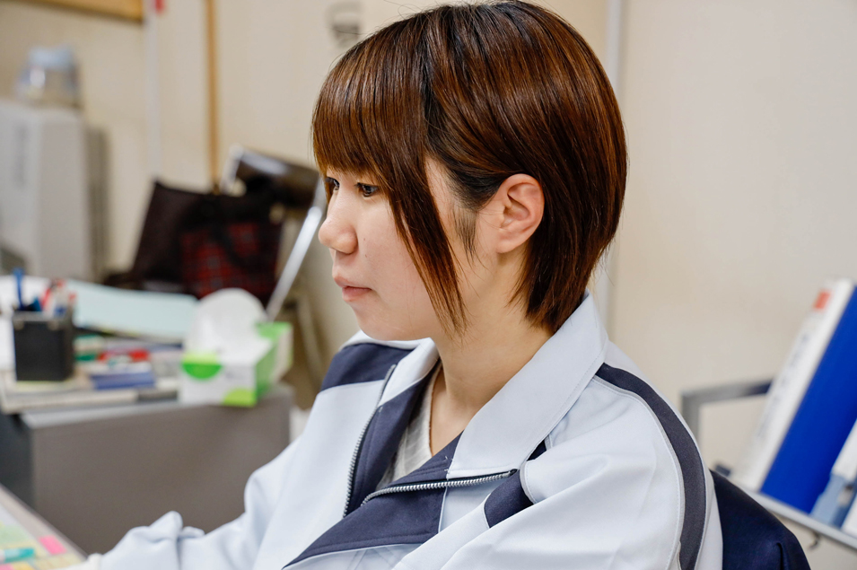

社員インタビュー


S・K
平成9年入社 工場部門 常務
10代半ばから先代社長の元で働き、会社を支えてきました。会社が小さいころから、まるよし工業の進化を支えて来た中の一人。社会人歴もまるよし工業歴も23年です。
まるよし工業の土台をつくり
工場業務を支えてきた
- ー20年以上、まるよし工業の変化をご存知だと思うのですが
- 会社も現在の場所ではなく、秋田市仁井田にあったころから知っています。会社の規模も人員も、今とは比べものにならないほど小さなものでした。できることはなんでもやっていました。時代が違う感じがします。
- ー今とは隔世の感があるということですか。
-
組織としては、かなり変わりましたね。特に、私が所属している工場ではMグレードを取得した平成22年ごろから、社員も充実し、作業の分担ができるようになりました。それによって作業にいくつかの流れができ、スケジュール管理をしながら効率的に仕事を進めるようになりました。工場の社員は熟練者が揃っています。全工程をこなせる技術を持った社員が、各部門を専任しているので、技術も安定し、仕事の質も上がっています。
社長は新しい環境を踏まえたシステム作りに尽力しています。工程管理などはかなり明白にわかりやすくなっています。その変化の中で、私の仕事は社長と工場をつなぐパイプのような仕事だと思っています。 - ーMグレードを取得した際に、どんな感想を持ちましたか。
-
時代の流れを考えるとMグレードは必須だと思っていたので、取れたときはほっとしました。この水準を落とさないように頑張っていかなければと気持ちが引き締まりました。
５段階に分かれる基準の中でも、Mグレードは取得企業が一番多いので、逆にいうとライバルも多い。その中で生き残るために納品前に全数検査を行うことで品質を守り、絶対に納期を守るというルールを決め、お客様の信頼を得るように努力してきました。おかげで、信頼を寄せてくれる常連客が増えています。 - ーまるよし工業の仕事へのこだわりはありますか。
-
仕事の幅は、県内だけではなく、東北全般に広がっています。工場内で完成させた鐵骨類は遠方まで運ばれ、私たちの目に触れない現場で組み立てられることも多いです。だから「誤差のない仕事をして、不具合を出さない」仕事を目指しています。その「まるよし品質」こそが大切だと思っています。
また、自分の仕事としては、ものづくりだけでなく管理の仕事へも力を注いでいます。その上で、自分たちのつくり出すものこそがナンバーワンだと誇りたいですね。


Y・T
平成24年中途入社 設計兼工務課長
造園業、卸売業という異業種からの転職というユニークな存在。入社以降もCADとして働きながら、工場とCADをつなぐ調整役のような役目を担っています。社会人歴は９年、まるよし工業では８年目です。
工場とCADという二つの仕事を
円滑につなぐ潤滑油になりたい
- ーまったくジャンルの違う職種からの転職とお聞きしました。
- まったくの専門外から、縁あって入社しました。前職の卸業では、注文が入った商品をお客様に届けて設置するという仕事で、私の性分に合いませんでした(笑)。まるよし工業に入社した時に感じたのは、ルールのある仕事は精神的に楽だということでした。確認しながら前に進める仕事につけてよかったと実感しました。
- ー今の仕事の方が、自分の適正にあっていると思いましたか。
-
ルールがある方が、仕事の把握がしやすく働きやすいと思いました。とはいっても、まったくの門外漢だったので、最初は工場の技術者さんたちには「子供だと思って教えてください」とお願いしました(笑)。その無理なお願いを受け入れてもらえた点が、この会社の社風のいいところだと思います。
それ以来、「時間と環境さえ把握できれば、準備することができる」という思いが、前進するための原動力になりました。気がつけばCADとして図面を描きながら、パソコン前と工場をつなぐ調整役のような役割もこなすようになりました。知識の蓄積が少なかったので、疑問点を解決するために周りの技術や情報の助けを借りることになり、気がつけばいくつかの部署をつなぐ役目を担うようになりました。時間が経つにつれ、図面が描けて、工場の仕事も理解できるという二つの強みを持つようになりました。 - ーそれまでになかった仕事のジャンルを担っているのでしょうか。
-
結果的には、調整役という実績を作ったのかもしれません(笑)。
まるよし工業は工場の高い技術力と風通しのいい社風があって、年々結束力が強くなっている実感もあります。お客様の要望をCADも工場も一丸となって形にするためのシステムができあがりつつあります。そういう環境が整ったまるよし工業にしか描けない図面があると思います。 - ー今後の仕事について目標はありますか。
-
おかげさまで、あの人はそういう人だからという社内の理解のもと、「野放し」にしてもらっているので、お金と工場のこと以外は関わっていければと思っています。私自身も「（社内に）やったことのない仕事がまだあるかもしれない」という気持ちを持ち続けたいと思っています。
これから一緒に仕事をしていく若い社員にも、いろんなことに積極的に興味を持ってほしいと思っています。今、私がこうやって働けているのも、入社したての私を後押ししてくれた「（興味があったら）やってみればいい」という社長の言葉のおかげです。自分に合う仕事を見つけていくことも大切だと思います。
S・H
平成18年中途入社 工場部門
高校卒業後、異業種で７年ほど働いた後に鐵骨加工業に転職。工場でものをつくる仕事をしたいというのが転職の理由でした。社会人歴は21年、まるよし工業では14年目です。
自分はものづくりに向いている。
その思いに引かれ、転職
- ー鐵骨加工業に転職した理由はなんですか。
- 最初は、ルートセールスの仕事をしていました。７年ほど働いた時に、このままでいいのだろうかと自分の仕事と向き合いました。昔から体を使ってなにかをつくる作業が好きだったので、思い切って今の仕事に職を変えました。働いてみて、この仕事は自分向きだなと改めて感じています。
- ーまるよし工業での仕事はどうですか。
- 今は溶接を担当していますが、15年近い経験があり、どの仕事もこなせるという自負も持っています。工場のスタッフも経験豊富な人が多く、互いが互いの仕事を補佐しあえる安心感があります。自分で言うのもなんですが、人柄のいいチームだと思いますよ(笑)。
- ー鐵骨加工業の醍醐味はなんですか。
- ありきたりかもしれませんが、完成した建物を見ている時の達成感だと思います。外側からは見えませんが、あの壁の中に自分の仕事が埋まっていると思うと感動します。
- ー働く上で大切にしていることを教えてください。
-
働くことが当たり前すぎて言葉にしにくいですが、経験と時間を着実に積んで、腕を上げていくことです。今は主に溶接作業担当していますが、組み立て・溶接・一次加工という鐵骨加工の全てを身につけ、オールラウンダーとして働きたいと思っています。
実際の作業では、「早くて丁寧な仕事」を心がけています。図面に忠実であるだけでなく、現場で作業をするときに、図面では判断できない不具合が出ないように「直しのない」部品をつくることを目指しています。 - ーまるよし工業のいいところはなんですか。
- 先ほども言いましたが、まるよし工業はチームとして仕事をする連携ができているので、誰かが自分の仕事を見ていてくれる感じがあります。守られているという安心感がすごくいいと思います。私が入社したのは、Mグレード取得後なので以前との比較はできませんが、仕事の質は上がっていると思います。


M・H
平成31年新卒入社 設計部門
秋田県建築デザイン専門学校卒業。建築及び、デザイン系の職種を希望して、まるよし工業へ。社会人もまるよし工業でも2年目です。
日々の仕事を通して学ぶことが多く
毎日が刺激的です
- ーまるよし工業での仕事を教えてください。
- 建築物の情報を図面化するCADをしています。一言でいえば、お客様からいただいた平面上の情報を３Dに書き換えるという感じでしょうか。最初は時間ばかりかかってミスも多く大変でしたが、最近は面白さがわかってきました。
- ー入社前からこの仕事を希望していたのですか。
- 建築・インテリア関係の仕事がしたくて、専門学校に通っていました。秋田で就職したいという希望もありました。募集内容を見て興味を持ちました。実際に仕事を始めたら、ほぼ素人同然状態からのスタートでしたので、社長が先生になって教えてくれました(笑)。
- ーCADの仕事の難しさはなんですか。
- 私たちが描いた図面をもとに、工場で鐵骨を加工・溶接します。そのあと、工事現場に運ばれた鐵骨は、図面を見ながら組み立てられます。組み立て作業は別の会社が担当することも多いので、当たり前ですが図面は正確でなければいけません。「図面上で可能な作業が現場でできない」という不具合が出ないように、何度もチェックしています。お客様からの要望を確実に図面に反映させるためのコミュニケーションの大切さや、自分一人の仕事として完結せずに、上司に相談、チェックをしてもらうことを心がけています。
- ー仕事をしていて楽しいことはなんですか。
- 最初の頃は図面チェックのたびに多くの訂正指示があったのですが、最近は少なくなってきたことがうれしいです。自分の担当した建物を見ると、気持ちが上がります。入社したてのころに担当した店舗が完成した時に、社長が連れて行ってくれました。その時のうれしさは、今でもしっかり覚えています。
- ー今現在、仕事をするときに気をつけていることはありますか。
- 図面にとりかかる前に、過去のデータを確認するようにしています。自分の分だけでなく、先輩たちが手がけたデータも参考にしています。そうするとイメージがつくりやすいし、仕事の質が上がると思います。
M・S
平成31年新卒入社 設計部門
秋田県建築デザイン専門学校卒業。建築及び、デザイン系の職種を希望して、まるよし工業へ。社会人もまるよし工業でも2年目です。
集中してパソコンに向かう・・・
その時間が好きです
- ー入社前にデザイン専門学校に通っていたと聞きました。
- もともと、住宅関係の設計やインテリアに興味がありました。専門学校では、そういう勉強をしていました。少しでも、夢に近い仕事を探していて、まるよし工業を希望しました。今はCADの仕事をしています。
- ーその経験は役に立ちましたか。
- 実際にCADの仕事で使っているソフトも違いますし、用語もかなり違います。慣れるまでは、覚えなければいけないことが多すぎて大変でした。でも、集中して黙々と働く今の仕事は性格的にもあっているような気がします。
- ーCADの仕事の難しさはなんですか。
- 自分が描いた図面がすべての仕事の始まりになることに責任を感じています。工場に図面を提出するまでに、どれだけチェックを繰り返しても足りない気がします。図面制作が終わってもまだ仕事は続いていて、現場作業が終わった時に「あぁ、無事に完成したんだ」という気持ちになります。
- ー仕事上で気をつけていることはありますか。
-
同じミスを繰り返さない。制作中の疑問は制作中に解決することです。
例えば、図面制作中に発生した不具合を必ずチェックしています。性格的にうっかりなところがあるので(笑)、気をつけています。お客様からいただいた情報に疑問点があったら、可能な限りお客様にもチェックしていただいています。状況的に難しい時もあるのですが、自分一人で完結しないことは大切だと思っています。それと「丁寧な仕事を、できるだけ早く」ということも心がけています。 - ーまるよし工業はどんな会社ですか。
- すごく、チームワークのいい会社だと思います。工場、CADと仕事の内容は違っても、「いい建物を作る」という同じ目標に向かっているので、小さなことでも相談できる点が心強いと思います。社長がとても気さくな方なので、厳格なかたい雰囲気がなく(笑)、働きやすいいい環境だと思います。